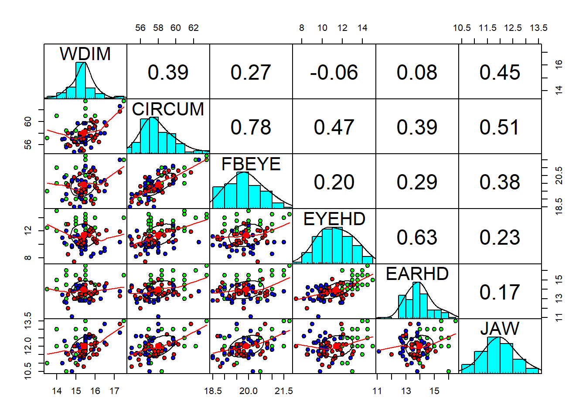

getwd()## [1] "C:/Users/myavu/OneDrive/Desktop/DATA SCIENCE/R/My Projects/GITHUB/Machine-Learning-Models"setwd("C:/Users/myavu/OneDrive/Desktop/DATA SCIENCE/R/My Projects/Data Mining")
getwd()## [1] "C:/Users/myavu/OneDrive/Desktop/DATA SCIENCE/R/My Projects/Data Mining"fdata<-read.table("football_data.txt", header = T)
head(fdata)## group WDIM CIRCUM FBEYE EYEHD EARHD JAW
## 1 1 13.5 57.15 19.5 12.5 14.0 11
## 2 1 15.5 58.42 21.0 12.0 16.0 12
## 3 1 14.5 55.88 19.0 10.0 13.0 12
## 4 1 15.5 58.42 20.0 13.5 15.0 12
## 5 1 14.5 58.42 20.0 13.0 15.5 12
## 6 1 14.0 60.96 21.0 12.0 14.0 13#labels: 1: High School football players,
# 2: College football players,
# 3: non-football players in college#REquired libraries
library(psych)
library(MASS)head(fdata[2:7])## WDIM CIRCUM FBEYE EYEHD EARHD JAW
## 1 13.5 57.15 19.5 12.5 14.0 11
## 2 15.5 58.42 21.0 12.0 16.0 12
## 3 14.5 55.88 19.0 10.0 13.0 12
## 4 15.5 58.42 20.0 13.5 15.0 12
## 5 14.5 58.42 20.0 13.0 15.5 12
## 6 14.0 60.96 21.0 12.0 14.0 13cor(fdata)## group WDIM CIRCUM FBEYE EYEHD EARHD
## group 1.0000000 0.23434774 -0.2548989 -0.1645302 -0.52275886 -0.44475644
## WDIM 0.2343477 1.00000000 0.3865501 0.2708419 -0.06085635 0.07884543
## CIRCUM -0.2548989 0.38655006 1.0000000 0.7789327 0.46982158 0.39087246
## FBEYE -0.1645302 0.27084189 0.7789327 1.0000000 0.20036649 0.28708706
## EYEHD -0.5227589 -0.06085635 0.4698216 0.2003665 1.00000000 0.63038948
## EARHD -0.4447564 0.07884543 0.3908725 0.2870871 0.63038948 1.00000000
## JAW -0.2988388 0.45450662 0.5056499 0.3842090 0.23240843 0.17332363
## JAW
## group -0.2988388
## WDIM 0.4545066
## CIRCUM 0.5056499
## FBEYE 0.3842090
## EYEHD 0.2324084
## EARHD 0.1733236
## JAW 1.0000000pairs.panels(fdata[2:7],
gap=0,
bg=c("green", "blue", "red")[fdata$group],
pch=21)
#Partition for training and test data
set.seed(100)
ind <- sample(2, nrow(fdata),replace=T, prob = c(0.7,0.3))
train <- fdata[ind==1,]
test <- fdata[ind==2,]
dim(train)## [1] 65 7dim(test)## [1] 25 7qda.fit =qda(group~., data = train)
summary(train)## group WDIM CIRCUM FBEYE
## Min. :1.000 Min. :13.50 Min. :54.80 Min. :18.50
## 1st Qu.:1.000 1st Qu.:15.00 1st Qu.:56.90 1st Qu.:19.50
## Median :2.000 Median :15.50 Median :58.00 Median :20.00
## Mean :1.969 Mean :15.38 Mean :58.12 Mean :19.96
## 3rd Qu.:3.000 3rd Qu.:15.70 3rd Qu.:59.69 3rd Qu.:20.40
## Max. :3.000 Max. :17.50 Max. :63.50 Max. :21.50
## EYEHD EARHD JAW
## Min. : 7.40 Min. :11.10 Min. :10.5
## 1st Qu.:10.00 1st Qu.:13.40 1st Qu.:11.6
## Median :11.40 Median :13.90 Median :12.0
## Mean :11.32 Mean :13.86 Mean :12.0
## 3rd Qu.:12.50 3rd Qu.:14.50 3rd Qu.:12.4
## Max. :15.00 Max. :16.00 Max. :13.5qda.fit## Call:
## qda(group ~ ., data = train)
##
## Prior probabilities of groups:
## 1 2 3
## 0.3538462 0.3230769 0.3230769
##
## Group means:
## WDIM CIRCUM FBEYE EYEHD EARHD JAW
## 1 15.17391 58.99478 20.10870 12.934783 14.47826 12.21739
## 2 15.51429 57.53286 19.96667 9.861905 13.47143 11.98095
## 3 15.46667 57.75714 19.77619 11.009524 13.57143 11.78571#PREDICTION & CONFUSION TABLE FOR TRAINING SET
pred.train <- predict(qda.fit,train)$class
#Accuracy on training data
mean(pred.train == train$group)## [1] 0.8615385table(pred.train,train$group)##
## pred.train 1 2 3
## 1 21 1 0
## 2 0 16 2
## 3 2 4 19#PREDICTION & CONFUSION TABLE FOR TEST SET
pred.test <- predict(qda.fit,test)$class
#Accuracy on test data
mean(pred.test == test$group)## [1] 0.64table(pred.test,test$group)##
## pred.test 1 2 3
## 1 7 2 1
## 2 0 4 3
## 3 0 3 5